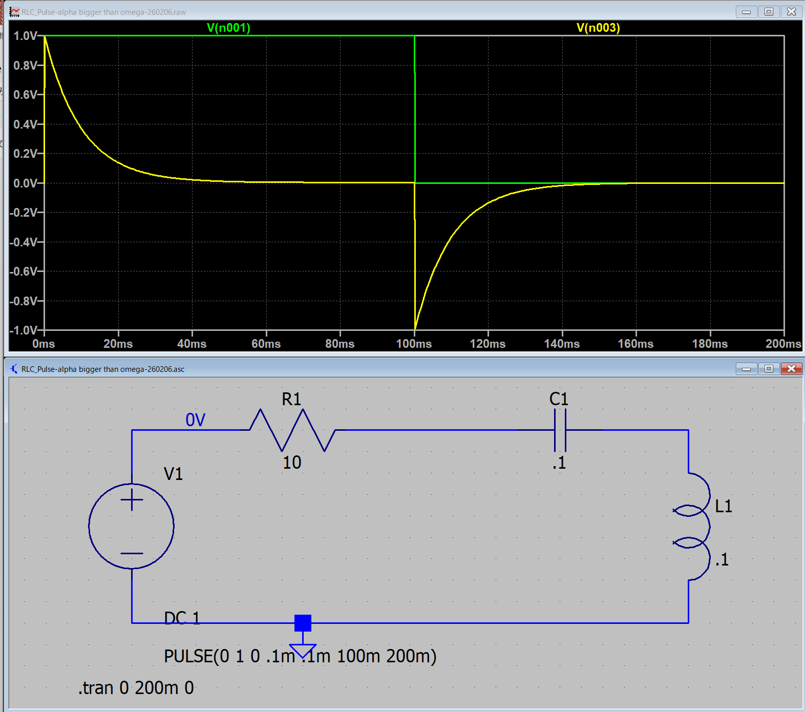
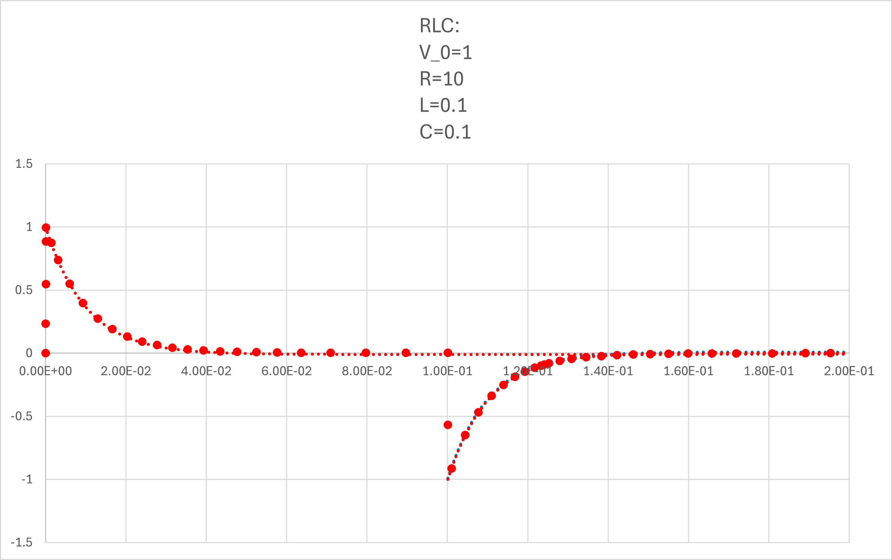

１６ー４．電圧で考えてみる（RLC回路）: α > ω0
まずは，コイルの電圧 ，から
α > ω0
0< t < t0
\(\Large I_1(t) = \displaystyle \frac{V_0}{2\omega L} \cdot e^{- \alpha t} \cdot \left[ e^{ \omega t} -e^{-\omega t} \right] = \frac{V_0}{\omega L} \cdot e^{- \alpha t} \cdot sinh \ ( \omega t)\)
\(\Large \hspace{40pt} \displaystyle \left(sinh (x) = \frac{e^x - e^{-x}}{2}, \ cosh (x) = \frac{e^x + e^{-x}}{2}\right) \)
t0 < t
\(\Large I_2(t) = \displaystyle \frac{V_0}{\omega L} \left[ e^{- \alpha t} \cdot sinh \ ( \omega t) - e^{- \alpha (t-t_0)} \cdot sinh \ \omega (t-t_0)\right]\)
\(\Large \hspace{40pt} \displaystyle \left(sinh (x) = \frac{e^x - e^{-x}}{2}, \ cosh (x) = \frac{e^x + e^{-x}}{2}\right) \)
VL ： コイルの電圧
0 < t < t0
\(\Large I_1(t) = \displaystyle \frac{V_0}{2\omega L} \cdot e^{- \alpha t} \cdot \left[ e^{ \omega t} -e^{-\omega t} \right]\)
\(\Large = \displaystyle \frac{V_0}{2\omega L} \cdot \left[ e^{ (- \alpha +\omega) t} -e^(\Large{(- \alpha-\omega) t} \right]\)
\(\Large V_{L1} = \displaystyle L \ \frac{d}{dt} I_1(t) \)
\(\Large = \displaystyle \frac{V_0}{2\omega } \cdot \left[ (- \alpha +\omega) \ e^{ (- \alpha +\omega) t} -(- \alpha-\omega) \ e^{(- \alpha-\omega) t} \right]\)
\(\Large = \displaystyle \frac{V_0}{2\omega } \cdot \left[ - \alpha \ e^{ - \alpha t} \ e^{\omega t} + \omega \ \ e^{ - \alpha t} \ e^{\omega t} + \alpha \ e^{ - \alpha t} \ e^{-\omega t} + \omega \ \ e^{ - \alpha t} \ e^{-\omega t} \right]\)
\(\Large = \displaystyle \frac{V_0}{2\omega } \cdot \ e^{ - \alpha t} \left[ - \alpha \ e^{\omega t} + \omega \ e^{\omega t} + \alpha \ e^{-\omega t} + \omega \ e^{-\omega t} \right]\)
\(\Large = \displaystyle \frac{V_0}{2\omega } \cdot \ e^{ - \alpha t} \left[ \omega \ ( e^{\omega t} + e^{-\omega t}) - \alpha ( e^{\omega t} - e^{-\omega t}) \right]\)
\(\Large = \displaystyle \frac{V_0}{\omega } \cdot \ e^{ - \alpha t} \left[ \omega \ cosh \ ( \omega t) - \alpha \ sinh \ ( \omega t) \right]\)
\(\Large = \displaystyle V_0 \cdot \ e^{ - \alpha t} \left[ cosh \ ( \omega t) - \frac{\alpha}{\omega} \ sinh \ ( \omega t) \right]\)
t0 < t
\(\Large I_2(t) = \displaystyle \frac{V_0}{\omega L} \left[ e^{- \alpha t} \cdot sinh \ ( \omega t) - e^{- \alpha (t-t_0)} \cdot sinh \ \omega (t-t_0)\right] \)
\(\Large V_{L2} = \displaystyle L \ \frac{d}{dt} I_2(t) \)
\(\Large = \displaystyle V_0 \cdot \left[ e^{ - \alpha t} \left\{ cosh \ ( \omega t) - \frac{\alpha}{\omega} \ sinh \ ( \omega t) \right\} -e^{ - \alpha (t-t_0)} \left\{ cosh \ \omega (t-t_0) - \frac{\alpha}{\omega} \ sinh \ \omega (t-t_0) \right\} \right] \)
\(\Large\hspace{40pt} \left(sinh (x) = \displaystyle \frac{e^x - e^{-x}}{2}, \ cosh (x) = \displaystyle \frac{e^x + e^{-x}}{2}\right) \)
となり，ステップオフの場合は，
第一項 ： 最初のステップオンの際の波形（たとえば，0→1）
第二項 ： t=t0，において，1→0，のように，逆のステップを入力した波形
なので，ステップオフ後，の波形は，
ステップオンの波形の残り ＋ マイナスのステップの波形 の和
となるわけです．
実際に，LTspice，でシミュレートしてみましょう．ここ，と同様に，
V0 : 1 V
R : 10 Ω
L : 0.1 H
C : 0.1 F
とすると，
\(\Large \displaystyle \omega_0 = \frac{1}{\sqrt{0.1 \times 0.1} } = 10 \ (1/s) \)
\(\Large \displaystyle \alpha \equiv \frac{10}{2 \times 0.1} = 50 \ (1/s) \)
となり，α > ω0，の条件となります．
\(\Large \displaystyle \omega = \sqrt{ \alpha^2 - \omega_0^2 } = 48.99 (rad/s) = 7.80 Hz \)
となり，LTspiceでシミュレートすると，

となります．式と当てはめてみると，

と一致することがわかります（全領域で）．
青点線，が右辺第二項，で右辺第一項との和が，シミュレーションと一致することがわかります．
一見，指数減衰のように見えますが，双曲線関数となります．
さらに電圧がマイナスとなる場合があります．
そのマイナスとなるタイミングの時間は，
\(\Large \displaystyle cosh \ ( \omega t) = \frac{\alpha}{\omega} \ sinh \ ( \omega t) \)
\(\Large \displaystyle \frac{sinh \ ( \omega t)}{cosh \ ( \omega t)} = \frac{\omega}{\alpha} \)
\(\Large \displaystyle t = \frac{1}{\omega} \ tanh^{-1} \ \left( \frac{\omega}{\alpha} \right) \)
となり，
R=10, L=0.１, C=0.1，の場合，約 46.8 msとなります．
次ページは，コンデンサの電圧を考えてみましょう．